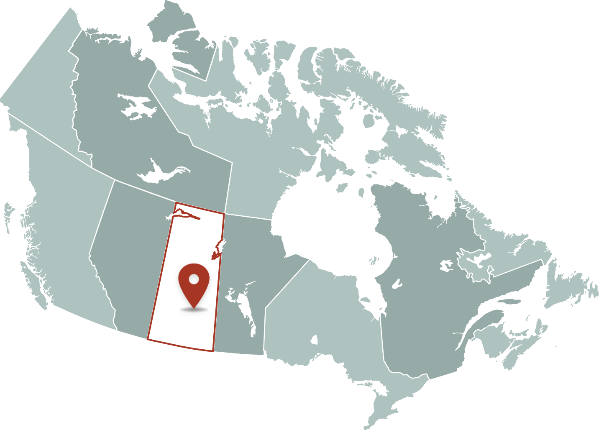

Eugene Arcand
Bob Charlie
Barbara Johnson
Lucy Kuptana Leon Wolfe
Tom Roberts
This hockey skate came to the Witness Blanket from Muscowequan
Residential School in Lestock, Saskatchewan. First Nations, Inuit and
Métis kids in residential school, like kids everywhere, were eager to
play sports and games. Sports could offer them a break from neglect
and loneliness. But hockey and other sports were also used to force
Indigenous children to learn European-Canadian values.
Leon Wolfe was taken to Muscowequan school. “If you read the stories
and you hear the stories and you know what the residential school
experience was about, it was pretty horrific,” he says. “But I guess
the latter years of going to school to some of these facilities, I had
a pretty positive experience in sports.”
Indigenous games and pastimes were almost never allowed at Canada’s
Indian residential schools. Instead, school staff trained children in
group exercises and competitive sports such as hockey and skiing.
Physical education was part of the schools’ colonial mission. But
sports also offered the kids a chance to work together and develop new
skills. Children used sports as a survival strategy to endure the
hardships they faced at residential school.

Tom Roberts was taken to Prince Albert Residential School in northern
Saskatchewan. He remembers sneaking away to toboggan: “We used to go
sliding down the hill here when we weren’t told to, but it was fun.”
The children used sports to cope. “I joined any kind of sports,” says
Barbara Johnson. “Name it, I was in it.” Barbara was taken to St.
Michael’s residential school in Alert Bay, British Columbia. “I just
loved the sports,” she says. “And I guess the opportunities there were
what made it softer, made it tamer for us.”
Eugene Arcand describes himself as “a sports person” and says: “For most
of us, our saving grace was sports.” He spent 11 years at residential
schools in Saskatchewan and played as many sports as he could. “These
sports for me were not sports. They were survival.”
After the Second World War in Canada, sports – especially hockey – were
widely seen as an expression of national identity, and not just as fun.
Accordingly, federal and church authorities used phys ed to educate
Indigenous children in European-Canadian cultural ideals such as
discipline and obedience. In 1951, an Indian Agent said: “A rink at this
school is almost as essential as a classroom.”
Funding for sports programs was irregular and inconsistent. But if a
school had a rink and equipment, kids threw themselves into the game.
Bob Charlie was taken to Whitehorse Baptist Residential School in the
Yukon. He recalls that “you do your schoolwork during the day, do your
chores like carrying wood or whatever. And you would play hockey for
hours.”
Indigenous hockey teams from reserves and residential schools were
winning tournaments as far back as the 1920s. “When you hear about the
history, the teams are really good. Like some of the best teams,” says
Leon. “A lot of the guys are some of the best hockey players you never
heard of.” Bob remembers: “The hockey teams here, the Peewee, the
Juveniles, were so good that they were unbeatable for about two, three
years in a row.”
Photographs of children playing hockey were circulated to demonstrate
the schools’ success at forcing Indigenous kids to accept colonial ways
of life. Even today these photos are often misinterpreted as proof that
the schools were supportive and enjoyable places to be. Photos and
hockey tournaments were used as propaganda. Eugene says: “The
missionaries used us. The missionaries liked to show off these kids from
the residential school.”
Skiing was a big part of the residential school experience in Inuvik,
Northwest Territories. Lucy Kuptana was taken to Grollier Hall in
Inuvik. “Everybody skied,” she recalls. “We went to territorial
championships. Some went to national championships. Some went to Arctic
Winter Games.” Lucy says: “By the time I left hostel I was racing the
five-kilometre for championship races.”
Despite her pride in her skiing accomplishments, Lucy says she “couldn’t
imagine sending my kids out to ski at minus 40.” And for years, the
children weren’t allowed to wear their own traditional outdoors
clothing. “We were given the standard hostel parka,” she says. “I was
around 10 when they started letting us use our own clothes, bring our
own clothes from home.”
When Lucy recently tried to take up skiing again with her sister, her
sister replied: “Are you crazy? I never want to put on a pair of skis
again!” Lucy says: “She was so good. She was so powerful. But the
thought of skiing, she didn’t like that.”
School administrators used the promise of sports programs to encourage
parents to comply when Indian Agents, RCMP officers or school staff took
their children away. Playing sports was also a valued privilege that
could be taken away as punishment. At other times, students were forced
to participate. “The skiing was pretty tough sometimes,” Lucy recalls.
“We skied every night in the winter,” she says. “Even minus 40, we were
out skiing. And you’re talking little kids. It was mandatory.”
School staff used fear and threats to motivate child athletes. “We had
to win,” says Eugene. “If you didn’t win, you didn’t get to go on other
trips, you didn’t get fed as good. All of that reward system affected us
psychologically.” He says, “I was so scared to lose. You know, you learn
that as a kid, and it just grows on you.”
Barbara remembers phys ed being used to separate her from her family.
She says: “One of my older brothers came. He wanted to take me for the
day.” But the school supervisor said: “No, she can’t go because she has
to go to gym.” She remembers taking her anger out through floor hockey.
“We were playing rough, and I took on the toughest girl,” she says. “I
fought and I fought and that was the first time that I think that I ever
fought anybody.” She laughs: “We’re still friends today.”
Residential schools used sports to instill colonial ideas and ways of
life into Indigenous children. As the 1996 report of the Royal
Commission on Aboriginal Peoples says: “In school, in chapel, at work
and even at play, the children were to learn the Canadian way.
Recreation was re-creation.”
But kids also used sports to develop solidarity and athletic skill
during times of loneliness and neglect. Sports were a chance for
children to work together and experience pride, even if they triumphed
under the watchful eye of coaches and supervisors. As Lucy says: “these
kids were excellent athletes. We were excellent athletes.”
Sports were a survival strategy. Indigenous kids were constantly finding
ways to thrive and endure in a neglectful and racist environment.
Sometimes that meant playing organized sports. Sometimes that meant
making their own fun behind the backs of teachers and school staff. Tom
says: “In order for us have fun, we used to break the rules, and that
was the greatest thrill of all.”
Refection
How much freedom did you have to play as a child. What values do we
learn from different sports and games. When residential schools
staff took photos, what impression did they try to create
I had lots of freedom to play as a child
We learn traits like teamwork and respect for others
They tried to make the
impression that the kids enjoyed it and where having fun